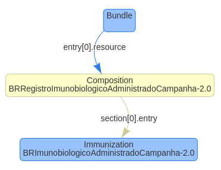
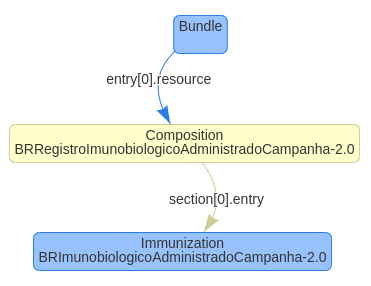

http://www.saude.gov.br/fhir/r4/CodeSystem/BRCBO
http://www.saude.gov.br/fhir/r4/CodeSystem/BRCID10
http://www.saude.gov.br/fhir/r4/CodeSystem/BRCategoriaDiagnostico
http://www.saude.gov.br/fhir/r4/CodeSystem/BRCondicaoMaternal
http://www.saude.gov.br/fhir/r4/CodeSystem/BREstrategiaVacinacao
http://www.saude.gov.br/fhir/r4/CodeSystem/BRGrupoAtendimento
http://www.saude.gov.br/fhir/r4/CodeSystem/BRImunobiologico
http://www.saude.gov.br/fhir/r4/CodeSystem/BRLocalAplicacao
http://www.saude.gov.br/fhir/r4/CodeSystem/BRRegistroOrigem
http://www.saude.gov.br/fhir/r4/CodeSystem/BRTipoDocumento
http://www.saude.gov.br/fhir/r4/CodeSystem/BRViaAdministracao
This fragment is not visible to the reader
Este publication inclui o IP abrangido pelas seguintes declarações.
| Type | Reference | Content |
|---|---|---|
| web | www.saude.gov.br |
IG © 2023+ Ministério da Saúde do Brasil
. Package br.gov.saude.ria.fhir#0.1.0 based on FHIR 4.0.1
. Generated 2025-06-11
Links: Table of Contents | QA Report |
| web | wiki.ihe.net | This is a metadata field from XDS/MHD . |
| web | servicos-datasus.saude.gov.br | A integração com a RNDS dar-se-á por meio dos serviços ( web services ) mencionados anteriormente. Para que seja possível acessar esses serviços disponibilizados no EHR Services é necessário realizar solicitação de acesso no Portal de Serviços do DATASUS . |
| web | webatendimento.saude.gov.br | Vale contextualizar que o parceiro tecnológico pode acionar a equipe técnica do DATASUS por meio do link de suporte se houver dúvidas nos testes ou algum problema no processo de integração. |
| web | acesso.gov.br | O acesso aos serviços digitais oferecidos pelo governo deve ser autenticado inicialmente pela plataforma gov.br, a qual exige uma conta que qualquer cidadão pode criar pelo portal https://acesso.gov.br . |
| web | www.gov.br | Este Guia de Implementação (IG) tem o objetivo de orientar Estados, Municípios, Distrito Federal, Estabelecimentos de Saúde ou Empresas Privadas que fornecem soluções/software na área de saúde a utilizarem os serviços (web services) que foram desenvolvidos para a Rede Nacional de Dados em Saúde (RNDS) , fornecendo as orientações técnicas necessárias para a integração dos sistemas/soluções locais com a rede, para o envio do Registro de Imunobiológico Administrado (RIA) seguindo as especificações do padrão HL7 FHIR versão R4 . |
| web | servicos-datasus.saude.gov.br | Este Guia de Implementação (IG) tem o objetivo de orientar Estados, Municípios, Distrito Federal, Estabelecimentos de Saúde ou Empresas Privadas que fornecem soluções/software na área de saúde a utilizarem os serviços (web services) que foram desenvolvidos para a Rede Nacional de Dados em Saúde (RNDS) , fornecendo as orientações técnicas necessárias para a integração dos sistemas/soluções locais com a rede, para o envio do Registro de Imunobiológico Administrado (RIA) seguindo as especificações do padrão HL7 FHIR versão R4 . |
| web | www.gov.br | A RNDS é uma plataforma nacional de integração de dados em saúde que faz parte do Meu SUS Digital , um programa do Governo Federal que tem como principal missão materializar a Estratégia de Saúde Digital do Brasil . |
| web | bvsms.saude.gov.br | A RNDS é uma plataforma nacional de integração de dados em saúde que faz parte do Meu SUS Digital , um programa do Governo Federal que tem como principal missão materializar a Estratégia de Saúde Digital do Brasil . |
| web | pt.wikipedia.org | Para garantir a interoperabilidade entre as aplicações de Saúde Digital, em especial Prontuário(s) Eletrônico(s) do Paciente, portais e aplicações ( web e mobile ), a troca de informações ocorre por meio de serviços ( web services ) RESTful , desenvolvidos de acordo com o padrão FHIR R4 . |
| web | servicos-datasus.saude.gov.br | Com essas evidências, o solicitante pode solicitar acesso ao ambiente de produção no Portal de Serviços . |
| web | www.gov.br | Perfis dos tipos ValueSet e CodeSystem estão associados a recursos terminológicos. No contexto de imunizações e os domínios utilizados, foram criados CodeSystems específicos definidos pelo Comitê Gestor de Saúde Digital (CGSD) . |
| web | www.gov.br | Perfis dos tipos ValueSet e CodeSystem estão associados a recursos terminológicos. No contexto de imunizações e os domínios utilizados, foram criados CodeSystems específicos definidos pelo Comitê Gestor de Saúde Digital (CGSD) . |
| web | www.in.gov.br | PORTARIA CONJUNTA SAES/SVSA/SEIDIGI Nº 25, DE 27 DE NOVEMBRO DE 2023 |
| web | www.gov.br | O documento clínico RIA-R (Registro de Imunobiológico Administrado em Rotina), destina-se ao registro das doses das vacinas previstas no Calendário Nacional de Imunização em atividades de vacinação rotineiras, bem como das doses aplicadas durante os estudos clínicos que subsidiaram a autorização de uso emergencial ou aprovação de registro sanitário de vacinas Covid-19 e de outras vacinas pela Agência Nacional de Vigilância Sanitária (ANVISA) . |
| web | servicos-datasus.saude.gov.br | Na página da RNDS no Portal de Serviços do DATASUS há um projeto de exemplo para obtenção do token utilizando a linguagem Java . |
| web | www.java.com | Na página da RNDS no Portal de Serviços do DATASUS há um projeto de exemplo para obtenção do token utilizando a linguagem Java . |
|
acessoGov.png |
|
estabelecimentosFilhos.png |
|
gerenciadorCredenciais.png
|
|
portalServicos.png
|
|
riacMC.png  |
|
riarMC.png |
|
tree-filter.png
|